[Auto]Stitching Photo Mosaics
Project 4 · Ariq Koh · CS180, Fall 2026 · homographies, warping and blending photos into mosaics
A1 Shooting the pictures
Three sets were shot from one spot, turning the camera between frames so neighboring photos differ by a projective transform, with roughly 50 to 60 percent overlap. The lounge and plaza pans have six photos each, but only four of each are used: the outermost photos look at the walls so obliquely that a flat projection stretches them into wedges, and all six lounge photos gave a canvas of 11778×8692 pixels.
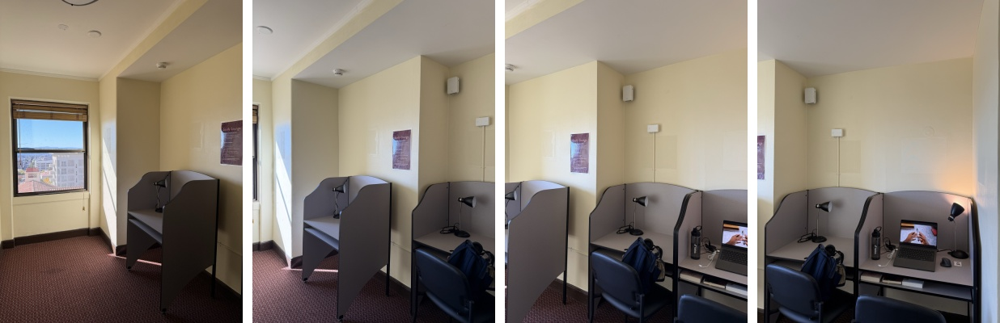
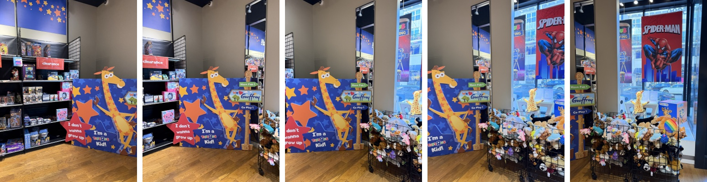
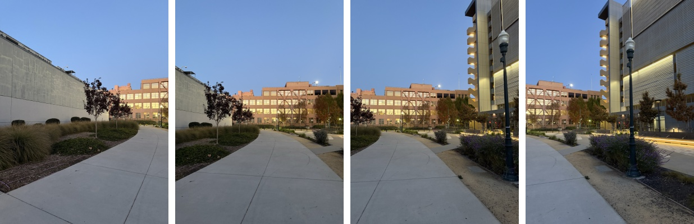
A2 Recovering homographies
A homography maps a point p = (x, y) of one photo to p′ = (x′, y′) of the other through a 3×3 matrix H with eight degrees of freedom, since the bottom right entry is fixed to 1 and the result is divided by the third coordinate. Multiplying that division out gives two equations per correspondence that are linear in the eight unknowns:
Stacking the two rows of every correspondence gives A h = b with A of size 2n×8. Four points solve it exactly, but a few pixels of click error then move H a lot, so 12 points per pair are clicked and the overdetermined system is solved by least squares (np.linalg.lstsq). The points were picked by hand with matplotlib's ginput on the two photos side by side, favoring window and furniture corners, signs and other sharp features spread across the whole overlap.
def build_system(im1_pts, im2_pts):
# Stack the linear system A h = b for the 8 unknowns h = (a, b, c, d, e, f, g, h) of H, with H[2, 2] fixed to 1.
# Every correspondence (x, y) -> (x', y') gives two rows:
# x' = a x + b y + c - g x x' - h y x'
# y' = d x + e y + f - g x y' - h y y'
pts1 = np.array(im1_pts, dtype=float)
pts2 = np.array(im2_pts, dtype=float)
n = len(pts1)
A = np.zeros((2 * n, 8))
b = np.zeros(2 * n)
x, y = pts1[:, 0], pts1[:, 1]
xp, yp = pts2[:, 0], pts2[:, 1]
A[0::2, 0], A[0::2, 1], A[0::2, 2] = x, y, 1
A[0::2, 6], A[0::2, 7] = -x * xp, -y * xp
A[1::2, 3], A[1::2, 4], A[1::2, 5] = x, y, 1
A[1::2, 6], A[1::2, 7] = -x * yp, -y * yp
b[0::2], b[1::2] = xp, yp
return A, b
def computeH(im1_pts, im2_pts):
# Homography H with im2_pts ~ H im1_pts. Both inputs are n x 2 arrays of (x, y). Four points solve the system exactly
# but a few pixels of click error move H a lot, so use more and solve the overdetermined system by least squares
if len(im1_pts) != len(im2_pts) or len(im1_pts) < 4:
raise ValueError("computeH needs the same number of points in both images, and at least 4")
A, b = build_system(im1_pts, im2_pts)
h = np.linalg.lstsq(A, b, rcond=None)[0]
return np.append(h, 1).reshape(3, 3)The complete 24×8 system for each set's first pair is linked under its correspondences below. The recovered homography of the first toy store pair, from IMG_1527 to IMG_1528, is:
The correspondences of the first pair of each set are drawn below, numbered in the order they were clicked.
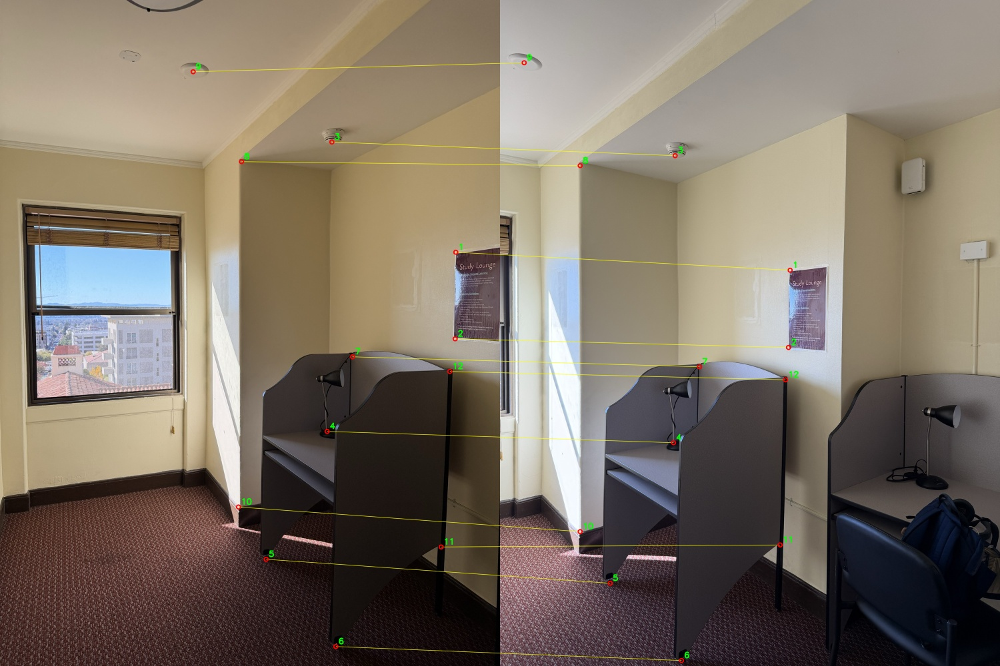
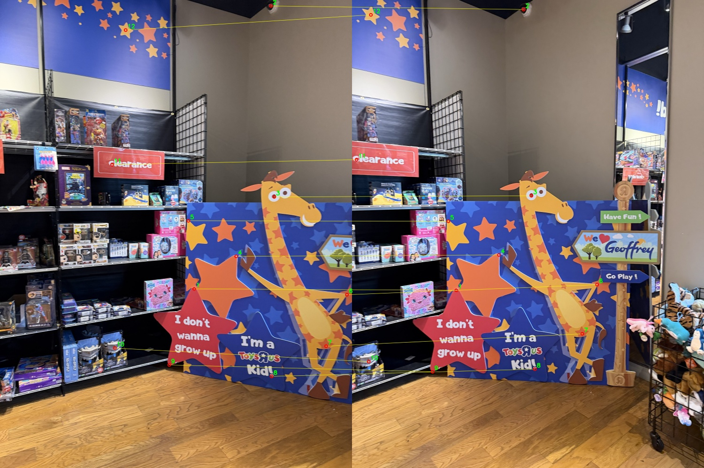
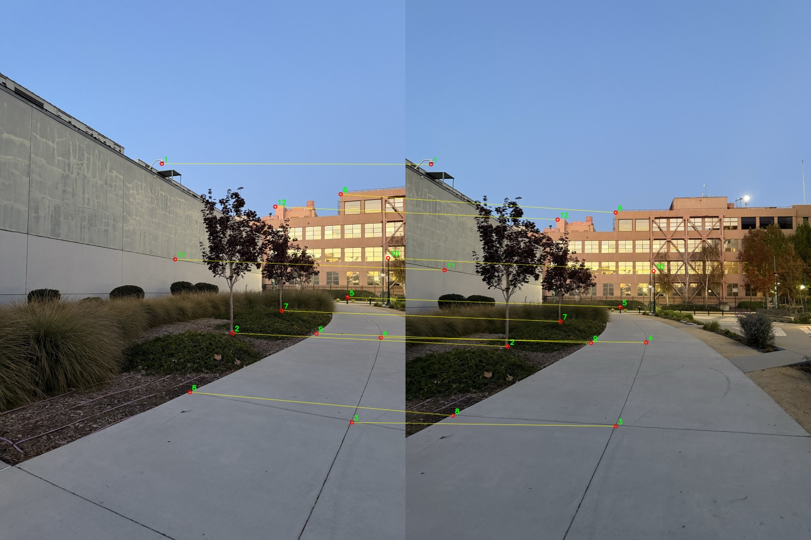
A3 Warping and rectification
The warps use inverse warping: the bounding box of the output is found by pushing the four corners of the photo through H, and every output pixel is then sent back through H−1 to find where in the photo it comes from. Every output pixel gets a value this way, so there are no holes. Pixels whose source lies outside the photo are marked in an alpha mask. Both interpolation methods are written with numpy only. Nearest neighbor rounds the source position to the closest pixel, and bilinear takes a weighted average of the four pixels around it, each weighted by how close the position is to it. Both return the warped image, the alpha mask and the position of the output's top left corner.
def warpImageNearestNeighbor(im, H, bbox=None):
# Inverse warp with nearest neighbor: round the source position to the closest pixel. Pixel (0, 0) is the center of
# the first pixel. Returns the warped image, an alpha mask (1 where the output pixel came from inside im) and the
# (x, y) of the output's top left corner in the target frame
height, width = im.shape[:2]
bbox = bbox or output_bbox(im.shape, H)
src_x, src_y = inverse_coords(H, bbox)
col, row = np.round(src_x).astype(int), np.round(src_y).astype(int)
alpha = (col >= 0) & (col < width) & (row >= 0) & (row < height)
warped = np.zeros(src_x.shape + im.shape[2:], dtype=im.dtype)
warped[alpha] = im[row[alpha], col[alpha]]
return warped, alpha.astype(float), (bbox[0], bbox[1])
def warpImageBilinear(im, H, bbox=None):
# Inverse warp with bilinear interpolation: a weighted average of the four pixels around the source position,
# where each is weighted by how close the position is to it. Returns the same three things as the nearest neighbor warp
height, width = im.shape[:2]
bbox = bbox or output_bbox(im.shape, H)
src_x, src_y = inverse_coords(H, bbox)
alpha = (src_x >= 0) & (src_x <= width - 1) & (src_y >= 0) & (src_y <= height - 1)
x, y = src_x[alpha], src_y[alpha]
# Top left of the four neighbors (kept one short of the last row and column so the other three exist)
col = np.minimum(np.floor(x).astype(int), width - 2)
row = np.minimum(np.floor(y).astype(int), height - 2)
dx, dy = x - col, y - row
if im.ndim == 3:
dx, dy = dx[:, np.newaxis], dy[:, np.newaxis]
im = im.astype(float)
values = ((1 - dx) * (1 - dy) * im[row, col] + dx * (1 - dy) * im[row, col + 1]
+ (1 - dx) * dy * im[row + 1, col] + dx * dy * im[row + 1, col + 1])
warped = np.zeros(src_x.shape + im.shape[2:])
warped[alpha] = values
return np.clip(np.round(warped), 0, 255).astype(np.uint8), alpha.astype(float), (bbox[0], bbox[1])To test them alone, two planar objects were photographed at an angle and rectified: the four corners of the door and of the window pane were clicked, and H sends them to the corners of an upright rectangle. The rectangle's proportions were chosen to match a door (500×1100) and the window (560×800), without measuring the real objects. The corners were clicked in different orders for the two photos, so they are sorted into top left, top right, bottom right and bottom left before solving.
3.1 Door
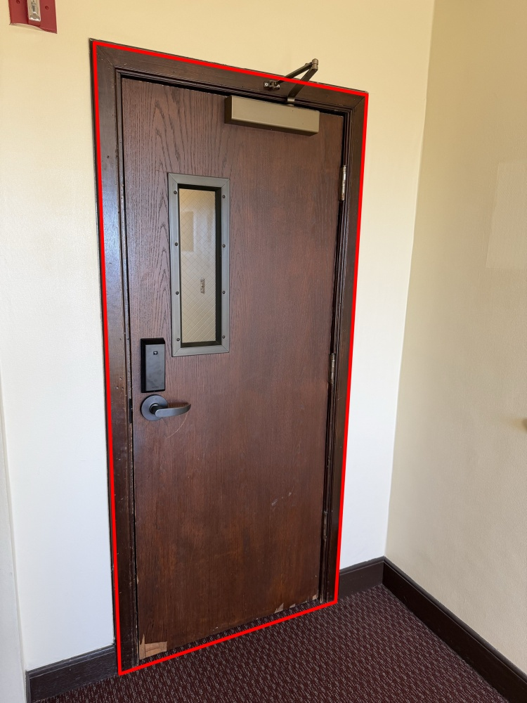
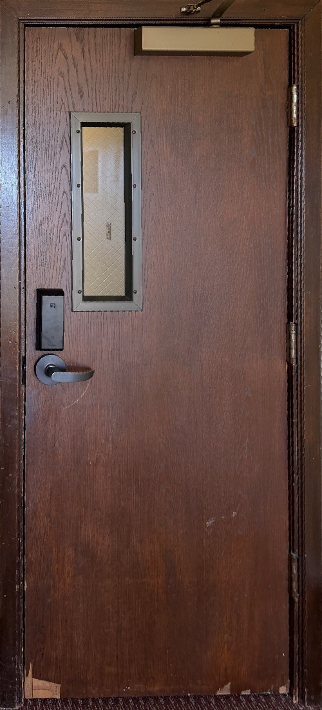
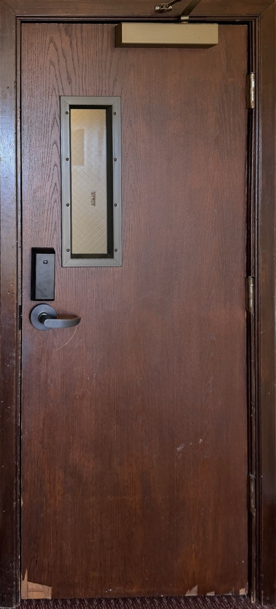
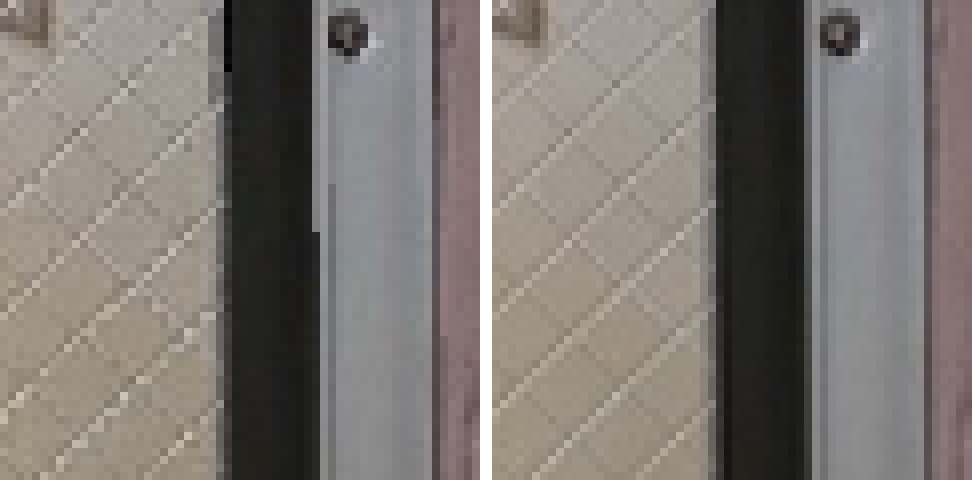
3.2 Window
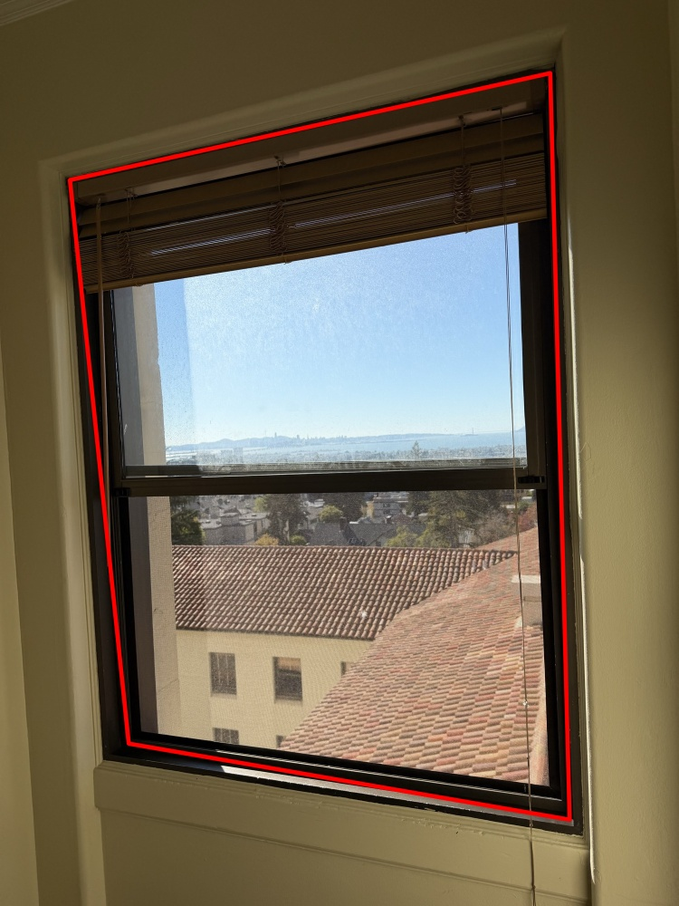
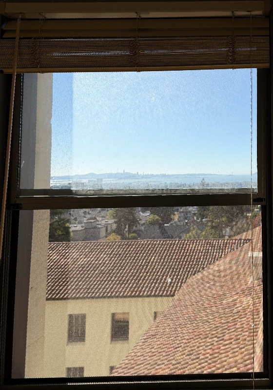
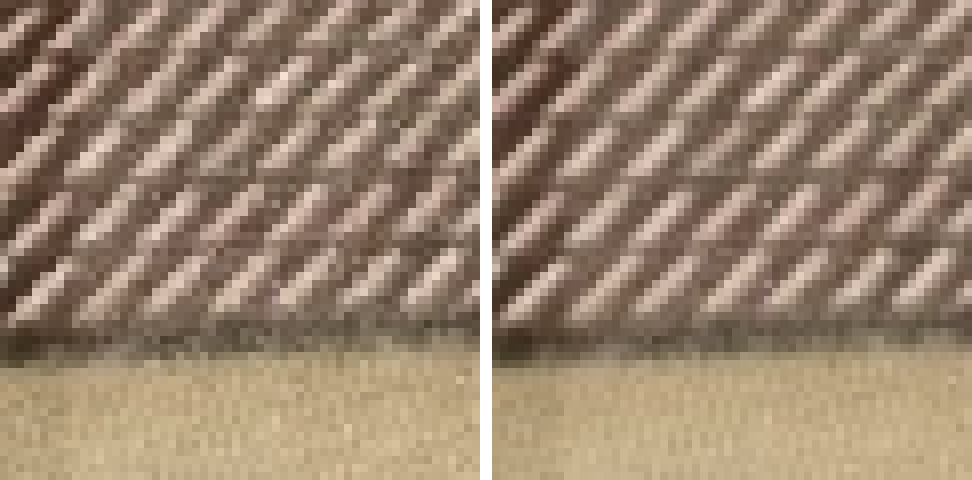
Both objects come out as upright rectangles. The door's frame, hinges and the edges of the glass panel are straight and parallel, and the window frame and the horizontal slats of the blind are level. In the enlarged patches nearest neighbor leaves stair-stepped edges, visible along the dark frame and the diagonal wire pattern of the door's glass and in the jagged tile edges of the window, because each output pixel copies a single source pixel. Bilinear gives smooth edges and a continuous pattern, at the price of slightly softer detail. On the 1500×2000 photos the timings of one run were:
| Object | Output | Nearest neighbor | Bilinear |
|---|---|---|---|
| Door | 500×1100 | 0.042 s | 0.122 s |
| Window | 560×800 | 0.031 s | 0.105 s |
Bilinear takes about three times as long, since it reads four pixels and mixes them per output pixel instead of one. The extra cost is small in absolute terms, and the mosaics below use bilinear throughout.
A4 Blending into mosaics
One photo near the middle of each set is left unwarped and the others are warped into its frame. Homographies are recovered for neighboring pairs only and multiplied together, so a photo farther from the reference uses the product of several pairs, and photos on the other side use the inverses. The bounding boxes of all the warped photos give one canvas, and every photo is warped onto it with bilinear interpolation. The mosaics are built from 750×1000 copies of the photos.
Overwriting leaves hard edges wherever exposure differs between photos, so the photos are blended with weights. Every pixel of a warped photo is weighted by its distance to the photo's nearest empty pixel, so a photo counts most at its center and fades to zero at its border. Each pixel is given to the photo with the largest weight, and that mask is blurred with a Gaussian that doubles in width at every level (four levels, σ = 8, 16 and 32). Each frequency band of the photos is mixed with the mask of its own level. Low frequencies, which carry exposure and color, are mixed across a wide seam, and high frequencies, which carry edges, across a narrow one. This hides the seams without double images.
4.1 Lounge
IMG_1506 is the reference, with IMG_1505 on its left and IMG_1507 and IMG_1508 on its right.
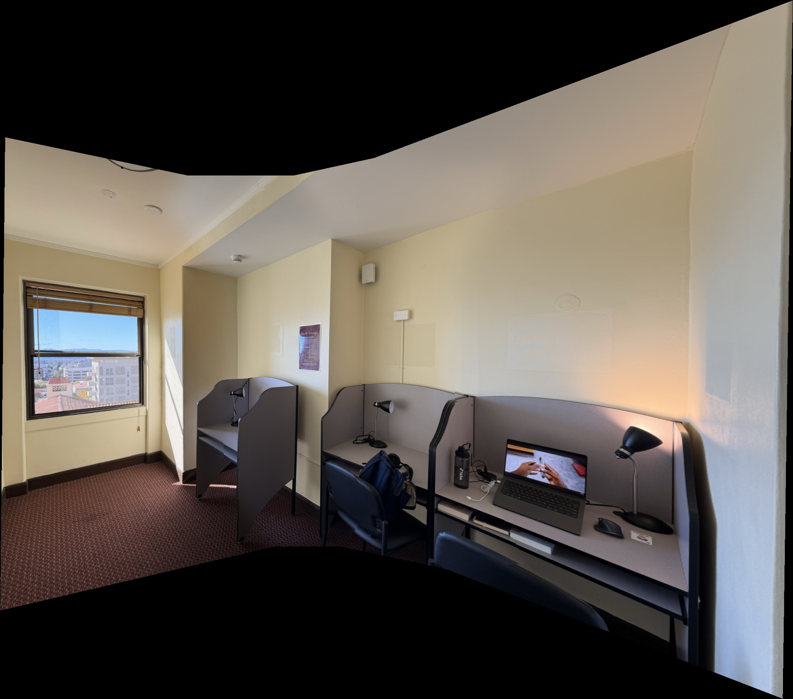
4.2 Toy store
IMG_1529 is the reference, with two photos on each side.
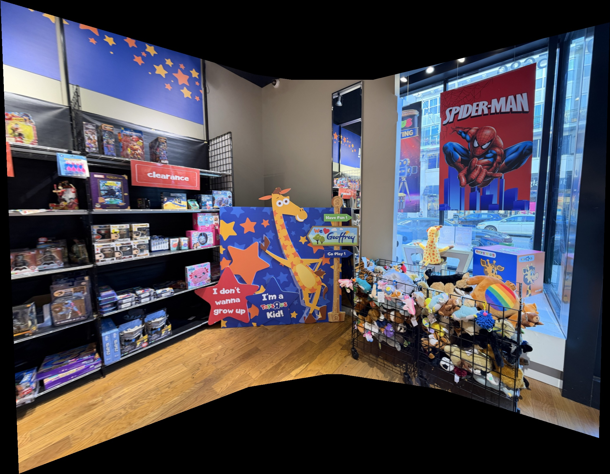
4.3 Plaza
IMG_1564 is the reference, with IMG_1563 on its left and IMG_1565 and IMG_1566 on its right.
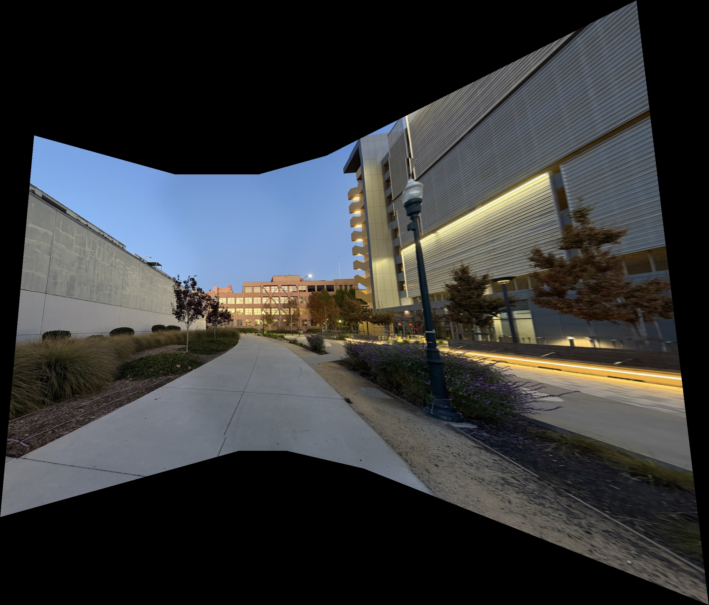